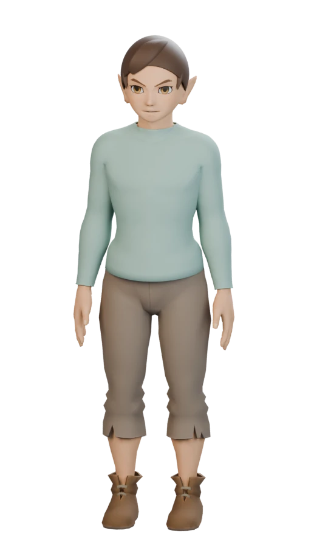
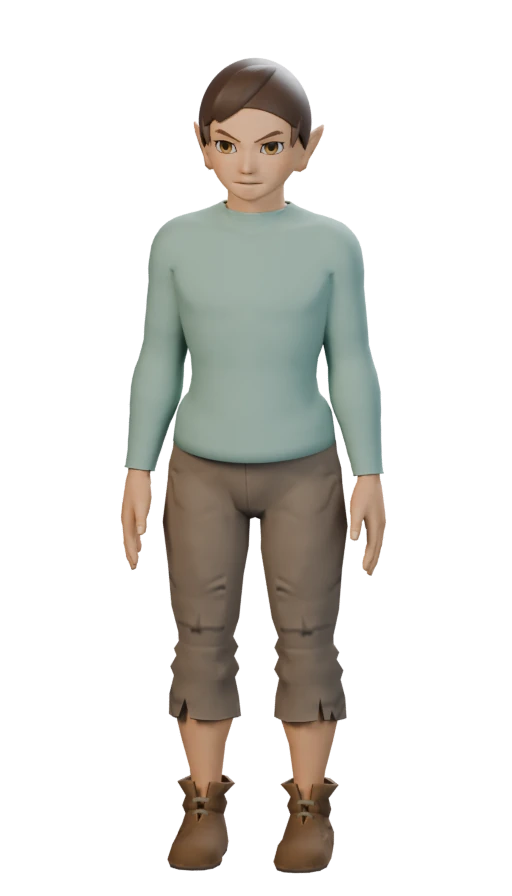

Version intégrée
base-v2
Matières initiales
Une nouvelle lecture du visage, du tissu, du cuir et des cheveux.

Matières initiales

Reliefs · rugosité · fibres · détails des yeux
La pose et les ancrages des équipements sont conservés.
Télécharger la version détaillée .glbReliefs du visage restaurés, zones de peau différenciées et iris plus définis.
Fibres orientées et rugosité variable, au lieu d’un reflet uniforme.
Grain du coton, plis, coutures et réponse du cuir à la lumière.
Les deux modèles utilisent la même géométrie et les mêmes ancrages. La comparaison 3D synchronise la caméra et l’éclairage pour juger les matières. Les rendus Blender montrent leur mise en scène respective.